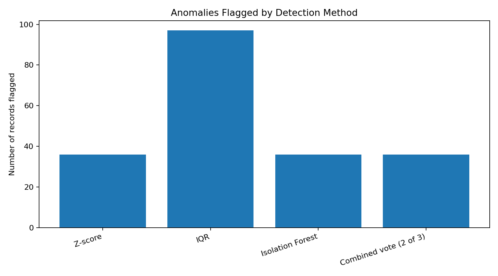
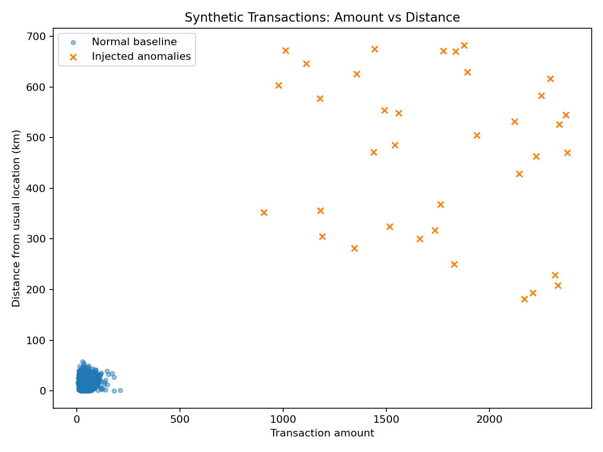

Dataset: 1,200 synthetic transaction records; 36 deliberately injected unusual records.
Injected labels were excluded from model features and used only to evaluate the methods.
| method | precision | recall | f1_score | flagged_records |
|---|---|---|---|---|
| Z-score | 1.0000 | 1.0 | 1.0000 | 36 |
| IQR | 0.3711 | 1.0 | 0.5414 | 97 |
| Isolation Forest | 1.0000 | 1.0 | 1.0000 | 36 |
| Combined vote (2 of 3) | 1.0000 | 1.0 | 1.0000 | 36 |


In this deliberately separated synthetic dataset, Z-score and Isolation Forest recovered all injected anomalies. IQR also recovered them but flagged more normal observations. In real data, thresholds and contamination must be tuned, features should be reviewed with domain experts, and alerts should be investigated rather than treated as proof of fraud.